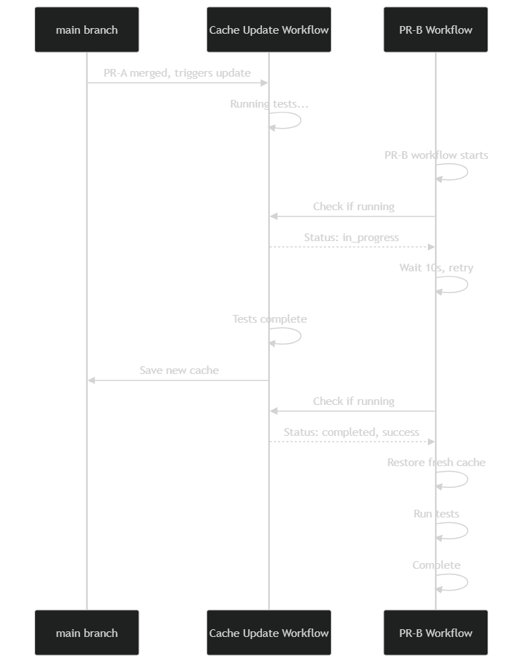

Contribute#
Overall guidance on contributing to a PyAnsys repository appears in Contribute in the PyAnsys Developer’s Guide. Ensure that you are thoroughly familiar with this guide, paying particular attention to Guidelines and Best Practices, before attempting to contribute to PyAEDT.
The following contribution information is specific to PyAEDT.
Clone the repository#
To clone and install the latest version of PyAEDT in development mode, run:
git clone https://github.com/ansys/pyaedt
cd pyaedt
python -m pip install --upgrade pip
pip install -e .
Development environment setup#
PyAEDT uses dependency groups (PEP 735) for managing development dependencies.
This is a modern approach that replaces the older [project.optional-dependencies]
mechanism for development-only dependencies.
Dependency groups vs optional dependencies#
PyAEDT uses two mechanisms for managing dependencies:
Optional dependencies (
[project.optional-dependencies]): Used for runtime features that users can optionally install (e.g.,dotnet,graphics,jupyter,all). These are installed withpip install pyaedt[graphics]oruv sync --extra graphics.Dependency groups (
[dependency-groups]): Used for development-only dependencies (e.g.,dev,doc,tests). These are NOT included in the package distribution and are only used during development. They are installed withpip install --group devoruv sync --group dev.
Note
After with PyAEDT 0.25, development dependencies have been migrated from
[project.optional-dependencies] to [dependency-groups] following PEP 735.
This ensures development dependencies are not accidentally included in package
distributions. When using pip, ensure you have pip version 25.1 or later to use the
new dependency group syntax.
Post issues#
Use the PyAEDT Issues page to submit questions, report bugs, and request new features.
To reach the product support team, email pyansys.core@ansys.com.
View PyAEDT documentation#
Documentation for the latest stable release of PyAEDT is hosted at PyAEDT Documentation.
In the upper right corner of the documentation’s title bar, there is an option for switching from viewing the documentation for the latest stable release to viewing the documentation for the development version or previously released versions.
Code style#
PyAEDT complies with the PyAnsys code style.
pre-commit is applied within the CI/CD to ensure compliance.
However, for local development, you might want to use prek
which is a drop-in alternative to pre-commit that is faster and more efficient in
disk space usage. The prek Python package can be installed and run as follows:
pip install prek
prek run --all-files
You can also install this as a prek hook with:
prek install
This way, it’s not possible for you to push code that fails the style checks. For example:
$ prek install
$ git commit -am "Add my cool feature."
black....................................................................Passed
isort (python)...........................................................Passed
flake8...................................................................Passed
codespell................................................................Passed
debug statements (python)................................................Passed
trim trailing whitespace.................................................Passed
Validate GitHub Workflows................................................Passed
blacken-docs.............................................................Passed
Naming conventions#
Consistency of names helps improve readability and ease of use. Starting with release 0.8 a concerted effort has been made to improve consistency of naming and adherence to :ref:`PEP-8<https://peps.python.org/pep-0008/>`_.
For example, methods used to create or access entities in
AEDT require that a name be passed to the method or function
as an argument.
It is tempting to
include context as part of that variable name. For example, while it is tempting to use
setupname
as an argument to :meth:`Hfss.create_setup`_,
the context “setup” is
explicitly defined by the method name. The variable name provides
a more compact
description of the variable in this context.
In previous PyAEDT versions, you can also find both setup_name and setupname used
for various methods or classes.
Improving naming consistency improves maintainability and readability.
The following table illustrates the recommended conventions:
Old name |
New name |
Example |
|---|---|---|
|
|
|
|
|
|
|
|
|
|
|
|
Take care to use descriptive names for variables and classes that adhere to PEP-8 and are consistent with conventions already used in PyAEDT.
Log errors#
PyAEDT has an internal logging tool named Messenger
and a log file that is automatically generated in the project
folder.
The following examples demonstrate how Messenger is used to
write both to the internal AEDT message windows and the log file:
self.logger.error("This is an error message.")
self.logger.warning("This is a warning message.")
self.logger.info("This is an info message.")
These examples demonstrate how to write messages only to the log file:
self.logger.error("This is an error message.")
self.logger.warning("This is a warning message.")
self.logger.info("This is an info message.")
Handle exceptions#
PyAEDT uses a specific decorator, @pyaedt_function_handler,
to handle exceptions caused by methods and by the AEDT API.
This exception handler decorator makes PyAEDT fault tolerant
to errors that can occur in any method.
For example:
@pyaedt_function_handler()
def my_method(self, var):
pass
Every method can return a value of True when successful or
False when failed. When a failure occurs, the error
handler returns information about the error in both the console and
log file.
Here is an example of an error:
----------------------------------------------------------------------------------
PyAEDT error on method create_box: General or AEDT error. Check again
the arguments provided:
position = [0, 0, 0]
dimensions_list = [0, 10, 10]
name = None
material = None
----------------------------------------------------------------------------------
(-2147352567, 'Exception occurred.', (0, None, None, None, 0, -2147024381), None)
File "C:\GIT\repos\AnsysAutomation\PyAEDT\Primitives.py", line 1930, in create_box
o.name = self.oeditor.createbox(vArg1, vArg2)
************************************************************
Method Docstring:
Create a box.
Parameters
----------
...
Hard-coded values#
Do not write hard-coded values to the registry. Instead, use the Configuration service.
Maximum line length#
Best practice is to keep the length at or below 120 characters for code, and comments. Lines longer than this might not display properly on some terminals and tools or might be difficult to follow.
Extension development guide#
This section describes the steps to create and integrate a PyAEDT extension at the project level. Extensions are modular components that add functionality to the AEDT environment via the PyAEDT API. They follow a structured convention to ensure consistency, maintainability, and documentation.
Note
To create an extension at an application level, for example Hfss, the process is similar.
The main difference is that the extension file and documentation should be placed in the
appropriate directory, for example src/ansys/aedt/core/extensions/hfss and
doc/source/User_guide/pyaedt_extensions_doc/hfss respectively.
Step 1: Create the extension Python file#
Navigate to the directory src/ansys/aedt/core/extension/project and create a new Python file for
your extension. The file name should be descriptive and follow the format extension_name.py, where
extension_name is a lowercase, hyphen-separated name that describes the extension’s functionality.
The extension file should follow the official
template
and contain at least two classes:
A class that inherits from
ExtensionCommonand implements the extension’s logic. By inheriting fromExtensionCommon, the extension’s theme and style are automatically set and can leverage standard extension methods like the theme button handling, access to the AEDT application, and more. The custom content of the extension should be defined in theadd_extension_contentmethod and should be called in the__init__method of the class. This method is where you can define the user interface (UI) elements, such as buttons, text fields, and other widgets to display. Below is an example of how to create a basic extension class:
from ansys.aedt.core.extensions import ExtensionCommon, ExtensionData
class MyExtension(ExtensionCommon):
def __init__(self, *args, **kwargs):
super().__init__(*args, **kwargs)
self.add_extension_content()
def add_extension_content(self):
# Define your UI elements here
pass
2. A data class that inherits from ExtensionCommonData. This class should define the data that is provided
and computed through the UI. Below is an example of how to create a data class for your extension:
from dataclasses import dataclass
from dataclasses import field
@dataclass
class MyExtensionData(ExtensionCommonData):
setup: str = ""
assignments: list = field(default_factory=lambda: [])
Splitting the extension logic into two classes allows for better separation of concerns and makes it easier to
test and maintain the code. The first class handles the UI and user interactions, while the second class
manages the data and logic behind the extension. On top of those classes, the file should also define a
main function that is used to run the core logic behind the extension. This function should ingest an
instance of the data class defined in the second step. Below is an example of how to define the main
function:
def main(extension_data: MyExtensionData):
if not data.setup:
raise AEDTRuntimeError("No setup provided to the extension.")
# Core logic of the extension goes here
Step 2: Add unit tests#
Create a test file in the tests/unit/extensions directory with the same name as your extension file, but with a
test_ prefix. For example, if your extension file is named my_extension.py, the test file should be
test_my_extension.py. This file should mainly contain unit tests for your extension’s UI components. For example
checking that clicking a button triggers the expected action or that the UI elements are correctly initialized.
If your extension requires AEDT to run, you should patch every method that requires AEDT to run, so that the test
can be run without an active AEDT instance. This is important because unit tests should be fast and not depend on
an external application like AEDT. You can use the unittest.mock library to patch methods and classes that
require AEDT. A good example of such a test file is the
test_template_extension.py
file where the instantiation of the Desktop class is patched to avoid the need for an active AEDT instance. Below
is an example of how to create a unit test for your extension:
from unittest.mock import patch
from ansys.aedt.core.extensions.project.my_extension import MyExtension, MyExtensionData
@patch("ansys.aedt.core.extensions.misc.Desktop")
def test_my_extension(mock_desktop):
extension = MyExtension()
assert "My extension title" == extension.root.title()
assert "light" == extension.root.theme
assert "No active project" == extension.active_project_name
extension.root.destroy()
Step 3: Add system tests#
Like the previous step, create a test file in the tests/system/extensions directory with the same name as your
extension file, but with a test_ prefix. However, contrary to unit tests, system tests are meant to be run with
an active AEDT instance. These tests should validate the overall functionality of the extension, ensuring that it
behaves as expected when integrated into the AEDT environment.
from ansys.aedt.core.extensions.project.my_extension import MyExtension, MyExtensionData
from ansys.aedt.core import Hfss
def test_my_extension_system(add_app):
# Create some data in AEDT to test the extension
aedt_app = add_app(
application=Hfss, project_name="my_project", design_name="my_design"
)
aedt_app["p1"] = "100mm"
aedt_app["p2"] = "71mm"
test_points = [
["0mm", "p1", "0mm"],
["-p1", "0mm", "0mm"],
["-p1/2", "-p1/2", "0mm"],
["0mm", "0mm", "0mm"],
]
p = aedt_app.modeler.create_polyline(
points=test_points,
segment_type=PolylineSegment("Spline", num_points=4),
name="spline_4pt",
)
# Create the extension and set its data by clicking on the "Generate" button
extension = MyExtension()
extension.root.nametowidget("generate").invoke()
# Check that the extension logic executes correctly
assert 2 == len(aedt_app.variable_manager.variables)
assert main(extension.data)
assert 7 == len(aedt_app.variable_manager.variables)
Run tests in VSCode and PyCharm#
This section explains how to run pytest unit and system tests in VSCode (Visual Studio Code) and PyCharm, and how to estimate coverage using the “Run with coverage” feature or pytest-cov.
Prerequisites#
Install pytest and pytest-cov in your environment if you haven’t already:
pip install pytest pytest-cov
Ensure your IDE is configured to use the Python interpreter where the packages are installed.
VSCode IDE#
Use the Test Explorer (Python extension) to discover and run tests:
Open the Testing side bar (beaker icon).
Run or debug individual tests, test files, or test suites from the UI.

Run tests and view coverage using the GUI
VSCode: - Click the “Run Test with Coverage” button in the Test Explorer toolbar to run one or more tests with coverage. - After the tests complete, a coverage summary appears in the Test Explorer (coverage % by file), and covered/uncovered lines are highlighted in the editor.

Brief note#
You can also run tests with coverage from a terminal in VSCode using pytest-cov: .. code:: bash
pytest tests/unit –cov=src –cov-report=term-missing –cov-report=html
This is an example command to run unit tests with coverage. Adjust the path to your test files as needed.
PyCharm IDE#
Configure pytest as the test runner: - Settings -> Tools -> Python Integrated Tools -> Default test runner -> pytest
Run tests from the IDE: - Right-click a test file, folder, or test function and choose Run or Debug. - Use the dedicated test runner UI to run and inspect results.

Run with coverage in PyCharm: - Right-click a test file or configuration and choose “Run ‘pytest in’ with Coverage”. - PyCharm shows a coverage summary and highlights covered and uncovered lines in the editor.
Run with pytest-cov from a terminal in PyCharm (alternative):
pytest tests/unit --cov=src --cov-report=term-missing --cov-report=html
Interpreting coverage results#
Coverage percentage shows the portion of executed lines compared to total executable lines in the source files.
Higher coverage is generally better, but 100% coverage does not guarantee bug-free code. At least 85% coverage for all the new code added to the repository is required.
Use
--cov-report=term-missingto see which lines are not covered directly in the terminal.Use
--cov-report=htmland openhtmlcov/index.htmlin a browser for an easy-to-navigate, per-file coverage report.Run unit and system tests separately to estimate their individual contributions:
Best practices#
Aim to keep unit tests fast and isolated; use mocks for external systems like AEDT.
Use the IDE “Run with coverage” feature for quick, visual feedback.
Step 4: Add the extension to the catalog#
Add your extension to the catalog by creating a new entry in the
toolkits_catalog.toml file located in the src/ansys/aedt/core/extensions/project directory.
The entry should follow the format of existing entries, specifying the name, script, icon, and template.
For example, to add your extension, you would add an entry like this:
[MyExtension]
name = "My Extension"
script = "my_extension.py"
icon = "images/large/my_extension_icon.png"
template = "run_pyaedt_toolkit_script"
The path to the image is relative to the directory where your extension is located. For example, if
the extension is located in the src/ansys/aedt/core/extensions/project directory then, following
the previous code block information, the path to the icon should be
src/ansys/aedt/core/extensions/project/images/large/my_extension_icon.png.
Step 5: Add the extension to the documentation#
To ensure that your extension is documented, you need to add a new card to the
doc/source/User_guide/extensions.rst file. This card links to the extension’s documentation page.
The documentation page needs to be created in the doc/source/User_guide/pyaedt_extensions_doc/project
directory and should contain a brief description of the extension, its functionality, and how to use it.
Also, another card should be added to the
doc/source/User_guide/pyaedt_extensions_doc/project/index.rst file to link to the extension’s documentation page.
This ensures that the extension is discoverable in the documentation from the multiple pages that list all the
extensions available in PyAEDT.
Local testing parameters#
Two configuration files control test behavior:
tests/local_config.json: Contains parameters intended for modification during local testing. These settings control test execution behavior such as desktop version, graphical mode, and feature flags. This file does not exist by default and must be created manually in thetests/directory.tests/pyaedt_settings.yaml: Contains default PyAEDT settings applied to all tests. These settings are not intended for local modification.
Creating local_config.json#
To customize local test execution, create a local_config.json file in the tests/ directory
at the top level of the repository. Below is an example configuration with descriptions of each parameter:
{
"desktopVersion": "2025.2",
"NonGraphical": true,
"NewThread": true,
"skip_circuits": false,
"use_grpc": true,
"close_desktop": true,
"use_local_example_data": false,
"local_example_folder": "",
"skip_modelithics": true
"use_pyedb_grpc": true
}
Parameter descriptions:
desktopVersion: AEDT version to use for testing (for example, “2025.2,” “2024.1”).NonGraphical: Whentrue, runs AEDT in non-graphical mode (headless).NewThread: Opens AEDT in a new thread.skip_circuits: Whentrue, skips Circuit-related tests.use_grpc: Whentrue, uses gRPC API for communication with AEDT.close_desktop: Whentrue, closes AEDT after tests complete.use_local_example_data: Whentrue, uses local example data for tests.local_example_folder: Path to the local example data folder.skip_modelithics: Whentrue, skips Modelithics-related tests.use_pyedb_grpc: Whentrue, use PyEDB with gRPC for database access.
Replicating CI/CD environment#
The CI/CD pipeline loads pyaedt_settings.yaml via the environment variable:
PYAEDT_LOCAL_SETTINGS_PATH='tests/pyaedt_settings.yaml'
To replicate the CI/CD environment locally, set this environment variable on your machine:
Windows (PowerShell):
$env:PYAEDT_LOCAL_SETTINGS_PATH='tests/pyaedt_settings.yaml'
Linux (Bash):
export PYAEDT_LOCAL_SETTINGS_PATH='tests/pyaedt_settings.yaml'
Testmon in CI/CD#
This section explains how PyAEDT uses Testmon to optimize test execution in the CI/CD pipeline by only running tests affected by code changes.
What is Testmon?#
Testmon is a pytest plugin that monitors which source code files are used by each test and stores this
dependency information in a database file (.testmondata). On subsequent test runs, Testmon analyzes
which files have changed and selectively runs only the tests that depend on the modified code.
Key benefits:
Faster CI pipelines: Only tests affected by changes are executed, significantly reducing test runtime.
Resource efficiency: Reduces computational costs on self-hosted runners and GitHub Actions.
Immediate feedback: Developers get quicker feedback on their changes.
How it works:
Testmon creates a dependency graph mapping each test to the source files it uses.
When code changes, Testmon compares the current state against the cached dependency data.
Only tests with dependencies on changed files are selected for execution.
The dependency database is cached between runs to maintain history.
Requirements and constraints:
For Testmon to work correctly, the following requirements must be met:
Dependency consistency: The Testmon cache must be built and used with the exact same dependency versions. If the environment changes (for example, package updates, different Python versions), the cache becomes invalid and must be regenerated. The CI/CD pipeline enforces this by using locked dependency files and consistent environments.
No pytest markers for test selection: Testmon relies on analyzing code dependencies to determine which tests to run. Using pytest markers (for example,
-m "solvers") forces Testmon to run with –testmon-noselect argument and leads to all tests being run, negating the benefits of selective testing. Instead, the way to select specific test suites is by providing the path to the test files (for example,pytest tests/solvers).
If you want to learn more details about this implementation, check .github/workflows files inside the repository.
Testmon workflow during pull requests#
When a pull request is created or updated, the CI/CD pipeline executes the following workflow:
Wait for cache update (if needed): Before running tests, the workflow checks if the
update-testmondata-cache.ymlworkflow is running on themainbranch for the pull request’s base commit. If so, the PR workflow waits for it to complete to ensure it uses the most up-to-date cache data.
Restore Testmon cache: Each job restores the
.testmondatafile from the GitHub Actions cache.
The cache key includes:
The test suite identifier (for example,
testmondata-unit-linux).The branch name (
main).The latest successful commit SHA (unique identifier of a commit) on
main.
Run selective tests: Pytest runs with the
--testmonflag, which instructs Testmon to:
Analyze which source files have changed compared to the cached state.
Select only tests that depend on the changed files.
Execute the selected tests.
Report results: Test results and coverage are uploaded as artifacts without modifying the cache
(only the
mainbranch can update the shared cache).
Note
The PR workflow does not update the shared Testmon cache. This ensures that all PRs work from
a consistent baseline derived from the main branch.
Testmon workflow during merge to main#
When a pull request is merged to the main branch, the update-testmondata-cache.yml workflow triggers automatically:
Run all affected tests: The workflow runs tests with Testmon to update the dependency data based on the newly merged code.
Delete old cache entries: Before saving, old cache entries for the same test suite are deleted to prevent cache accumulation.
Save updated cache: The updated
.testmondatafile is saved to GitHub Actions cache with a key that includes:
The test suite identifier (for example, testmondata-unit-linux).
The branch name (
main).The commit SHA.
Cache available for PRs: The new cache becomes the baseline for all subsequent pull requests.
Each test suite maintains its own separate cache:
testmondata-unit-linux: Unit tests on Linux.testmondata-integration-linux: Integration tests on Linux.testmondata-solvers-win: Solver tests on Windows.testmondata-solvers-linux: Solver tests on Linux.And other test suites (general, visualization, icepak, layout, extensions, filter, emit).
Note
For detailed information about edge cases, keeping PRs updated, and tracking coverage locally, see Developer notes.
Workflow diagrams#
The following diagrams illustrate the Testmon workflow in the CI/CD pipeline.
Diagram 1: PR workflow with Testmon
This diagram shows how the CI/CD pipeline handles a pull request with Testmon integration, including the cache waiting mechanism and selective test execution.


Diagram 2: Merge to main workflow
This diagram illustrates what happens when a PR is merged to the main branch and the
cache update workflow is triggered.


Diagram 3: Multiple concurrent PRs
This diagram shows how multiple PRs can run concurrently, each restoring from the same baseline cache without interfering with each other.


Diagram 4: Cache update blocking scenario
This sequence diagram shows the timeline when a PR workflow starts while the cache update workflow is running, demonstrating the waiting and retry mechanism.
